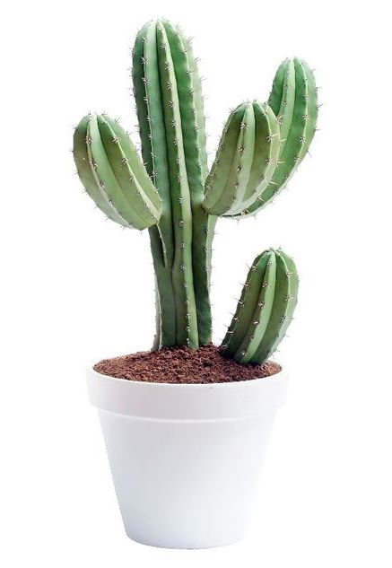

What is cactus?
A cactus is a member of the plant family Cactaceae, a family comprising about 127 genera with some 1750 known species of the order Caryophyllales. The word "cactus" derives, through Latin, from the Ancient Greek κάκτος, kaktos, a name originally used by Theophrastus for a spiny plant whose identity is not certain.Cacti occur in a wide range of shapes and sizes. Most cacti live in habitats subject to at least some drought. Many live in extremely dry environments, even being found in the Atacama Desert, one of the driest places on earth. Cacti show many adaptations to conserve water. Almost all cacti are succulents, meaning they have thickened, fleshy parts adapted to store water. Unlike many other succulents, the stem is the only part of most cacti where this vital process takes place. Most species of cacti have lost true leaves, retaining only spines, which are highly modified leaves. As well as defending against herbivores, spines help prevent water loss by reducing air flow close to the cactus and providing some shade. In the absence of leaves, enlarged stems carry out photosynthesis. Cacti are native to the Americas, ranging from Patagonia in the south to parts of western Canada in the north—except for Rhipsalis baccifera, which also grows in Africa and Sri Lanka.
